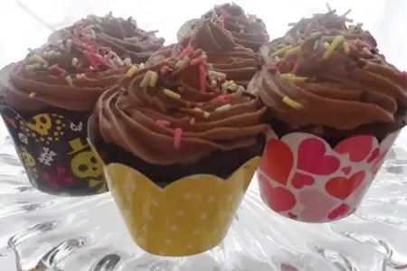

Voltar
Cupcakes de Chocolate

Cupcakes macios e úmidos, perfeitos matar a vontade de um docinho.
Não existe guloseima melhor que cupcakes para matar aquela vontade de doce. Esta receita consegue exatamente isso, sem deixar a massa seca, dura ou exageradamente doce.
Cupcakes são bem fáceis de fazer, e podem ser feitos no forno ou na airfryer. Para despejar a massa, pode-se utilizar tanto forminhas de papel quanto forminhas de silicone.
Ingredientes
- 3 colheres (sopa) de manteiga amolecida
- 2 colheres (sopa) de cacau em pó
- ¾ de xícara (chá) de açúcar
- ¾ de xícara (chá) de farinha de trigo
- 1½ colher (chá) de fermento em pó
- 1 pitada de sal
- 1 ovo
- ½ xícara (chá) de leite
Modo de Preparo
- Preaqueça o forno a 180 ºC (temperatura média). Coloque 12 forminhas de papel próprias para assar (não precisa untar) dentro da fôrma de cupcake.
- Na batedeira, coloque a manteiga, o cacau em pó, o açúcar, a farinha, o fermento e o sal. Atenção: a manteiga não pode estar nem derretida nem dura, mas em ponto de pomada. Retire da geladeira com antecedência e deixe sobre o forno para começar a amolecer ou coloque no micro-ondas, com muito cuidado para não derreter, em rodadas de 10 segundos.
- Na velocidade baixa, bata até que fique com textura de areia úmida.
- Numa tigela, bata o ovo com o batedor de arame e em seguida misture o leite. Acrescente metade dessa mistura à batedeira e aumente a velocidade ao máximo até que a massa fique lisa e cremosa.
- Diminua a velocidade e junte o restante do líquido aos poucos, até incorporar totalmente.
- Transfira a massa para um saco de confeitar sem bico e preencha ¾ de cada forminha. Leve ao forno para assar por cerca de 35 minutos. Faça o teste do palito: insira um na massa, se sair limpo está pronto.
Para o Buttercream
Ingredientes
- 6 colheres (sopa) de manteiga amolecida
- 3 colheres (sopa) de cacau em pó
- 2 xícaras (chá) de açúcar de confeiteiro
- 3 colheres (sopa) de leite
- confeitos coloridos a gosto para decorar
Modo de Preparo
- batedeira, coloque a manteiga (em ponto pomada), o cacau e o açúcar de confeiteiro. Bata em velocidade baixa até misturar, em seguida aumente e bata até formar um creme. Junte o leite, de colher em colher, batendo bem entre cada adição. Aumente a velocidade para o máximo e bata por 5 minutos até o glacê ficar cremoso e fofinho.
- Coloque o glacê no saco de confeitar com um bico pitanga grande (de aproximadamente 1 cm de diâmetro). Cubra cada cupcake com o buttercream fazendo um movimento circular, de fora para dentro. Decore polvilhando com os confeitos coloridos e sirva a seguir.